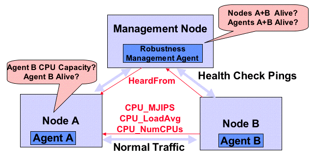
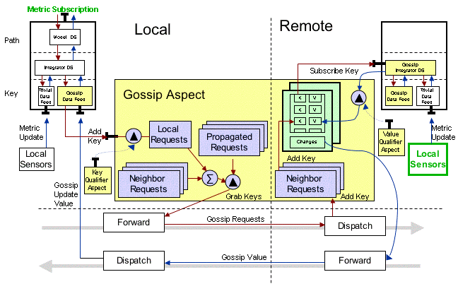

Gossip-based Dissemination Design
The Gossip subsystem allows Metrics collected on one Node to be
disseminated to other Nodes in the society. The Metrics are transfered
by piggybacking Gossip objects as attributes of ordinary messages
being sent between Nodes. Gossip takes two forms: requests for Metrics
from a neighbor Node, and responses to those requests. Request are
only made for Metrics used by the subsystems within the Node. Also,
Gossip is sent only when the value of requested Metrics change. So if
no Metrics are requested or the Metrics do not change, no Gossip is
sent.
Gossip is spread based on the underlying message structure of the
society. No additional messages are sent just to disseminate
Gossip. Gossip can request metrics from neighbors which are N hops
away which makes the Gossip system act like a limited range flooding
algorithm. But in practice, N is set to only one hop.
The following figure shows the two types of Metrics sharing that
can be accomplished by one-hop gossip.
Gossip Overview of Flow Between Nodes
|

|
First, Metrics about the neighboring Node can be sent and received
directly from the neighbor on normal traffic. The first three messages
exchanged between neighbors is enough to disseminate the static
characteristics of both neighboring Agents/Nodes/Hosts, such as CPU
capacity, Memory Size, Number of processors. Subsequent, messages will
carry dynamic information, such as CPU Load Average.
Second, Gossip can also be sent indirectly through a chain of
neighbors, which are all requesting the same Metrics. This means that
one Node can have up-to-date Metrics about another Node, even though
it has not recently received a message from the other Node. A typical
example is a case wherethe intermediate Node contains a manager or
name server Agent. These management Nodes tend to periodically send
messages to a group of Nodes. The Gossip arrives on messages coming
into the management Node and is propagated on all its out-bound
messages. For example, a management Node may send health check pings
to its managed Nodes. The sending pings will carry the dynamic Metrics
for all the other managed Nodes to the pinged Node. (Note the
recipient will only get information about the Metrics it has
requested, even though the management Node may know addition
information about other Metrics and other Nodes.) The reply from the
pinged Node will carry the updated Metrics requested by the management
Node.
Implementation
The Gossip implementation takes advantage of special characteristics of
both the MTS and the Metrics service. Below is a figure which show
the data flow between components which make up the Gossip subsystem.
The red arrows are the flow of Key Requests and the blue arrows are
Metric Value replies.
Gossip Internal Components
|

|
Processing Trace
The following example trace shows how a Metric Request on one Node
results on an update for a metric locally, even though the
information about the Metric was collected remotely.
- A Metrics Service Client makes a request for a Metric via a
Path. The Metric Formula that implements that Path, depends
on many raw Metrics Values, who's names are specified by Metrics Keys.
- The GossipDataFeed listens
for requests for Keys and forwards them on to the
GossipKeyDistributionService (implemented by the GossipAspect).
- The GossipAspect checks if the Key qualifies to be sent
using the GossipQualifierService (implemented by the
SimpleGossipQualifierComponent).
- The Key is added to a list of local Key requests.
- When a message is sent to a neighbor, the GosipAspect check if
there are any outstanding keys that need to be requested to this
neighbors. The requests are put in a KeyGossip object and added
to an attribute of the messages. (Note a separate lists of
outstanding requests is kept for each neighbor, since Gossip is
sent opportunistically and different neighbors have different
message patterns)
- On the receiver Node, the request is stored in the Neighbor
request record.
- A subscription is added to the local Metrics service for the
request. The special GossipIntegratorDS is used to subscribe to
the Key, so that the GossipDataFeed can ignore these requests as
non-local and not request them (again) for its neighbors. The
GossipQualifierService is used get a
MetricsNotificationQualifier from the
SimpleGossipQualifierComponent. The MetricsNotificationQualifier
is given to the MetricService.subscribeToValue as a way to limit
values returned. The qualifier sets thresholds on the change in
value and credibility of requested gossip metrics. If the
Metric is has not changed enough or is not credible, it is not sent.
- The GossipIntegratorDS acts like an IntegratorDS and subscribes
to Keys from all the DataFeeds. Key subscriptions can be
satisfied by any DataFeed, such as the local host probe, the local
metric service, or from the GossipDataFeed (neighbor's
neighbors)
- When the local value has changed, the subscription is
updated. The changed values are remembered for each neighbor.
- When a message is sent back to the original requester,
the values changed for the requester put into the Message Attributes.
- On the receive-side of the original requester, the changed
values are removed from the message and published in the
GossipUpateService (implemented by the GossipDataFeed).
- The GossipDataFeed will compare the new value with the Key's
current value, which could have come from any other neighbor. If the
Metrics is old, lower credibility, or the same Value, the new
Metric is ignored. Otherwise it becomes the current value for
the Key.
- The new value is propagated to the IntegratorDS
formulas. These in-turn will propagate to other subscribing
formulas, eventually calling the original Metrics service
Subscriber.